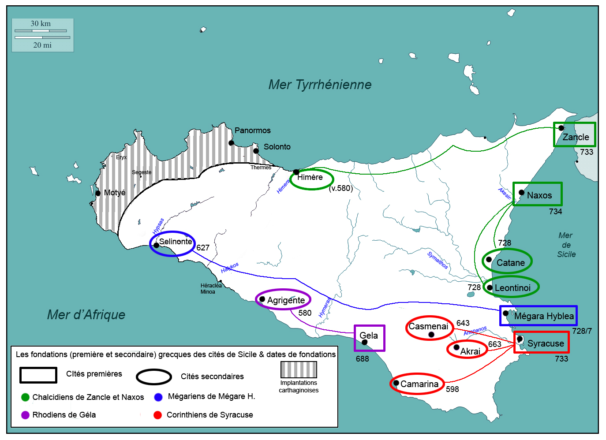
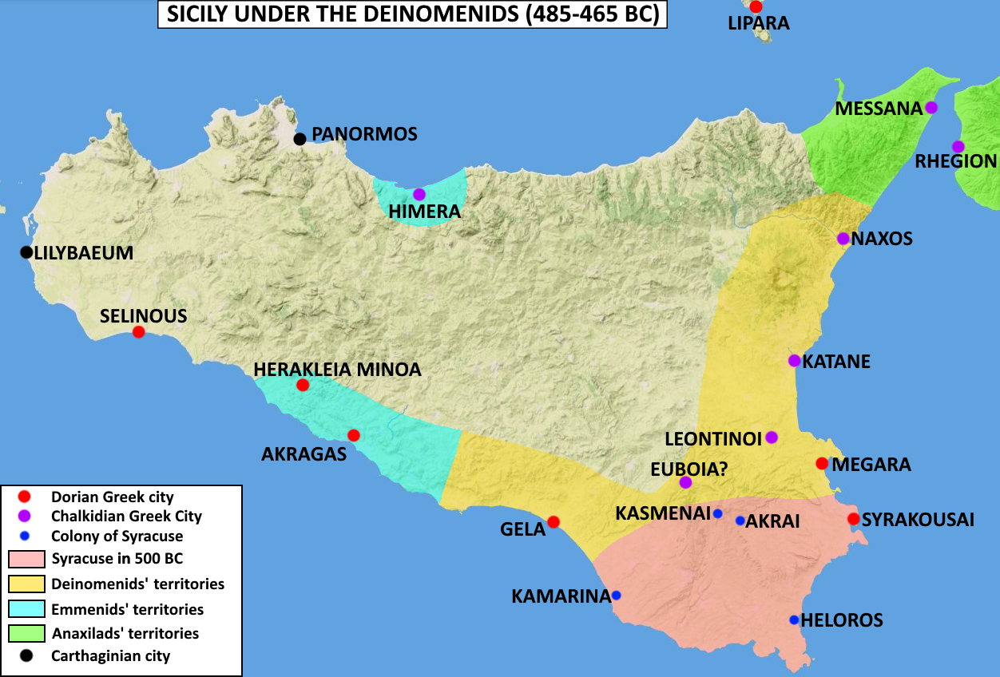
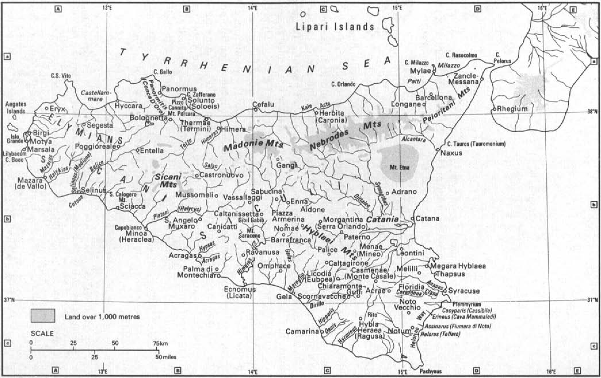
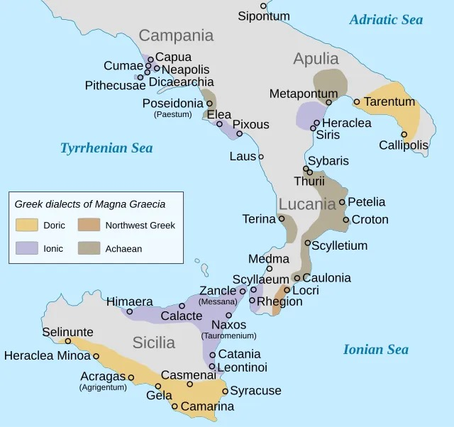
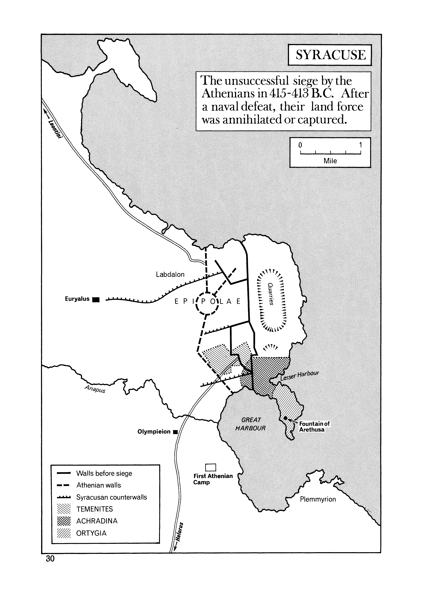
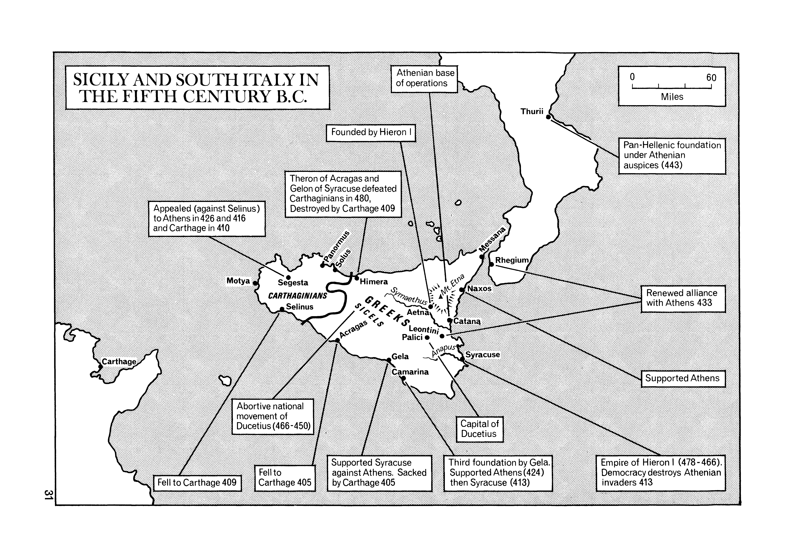
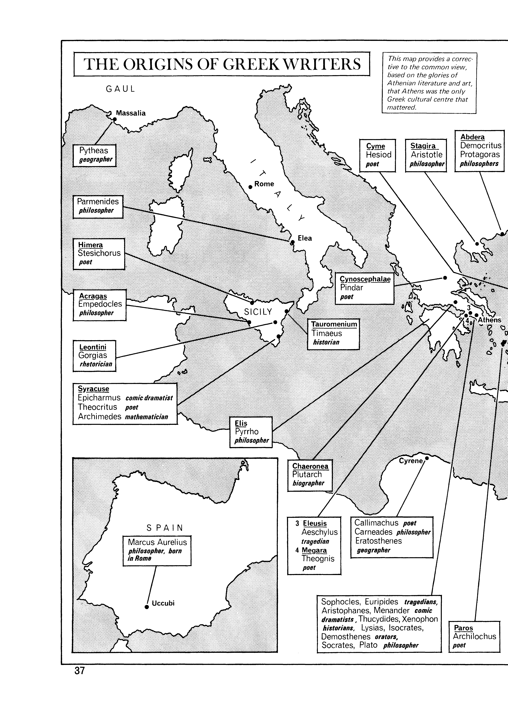
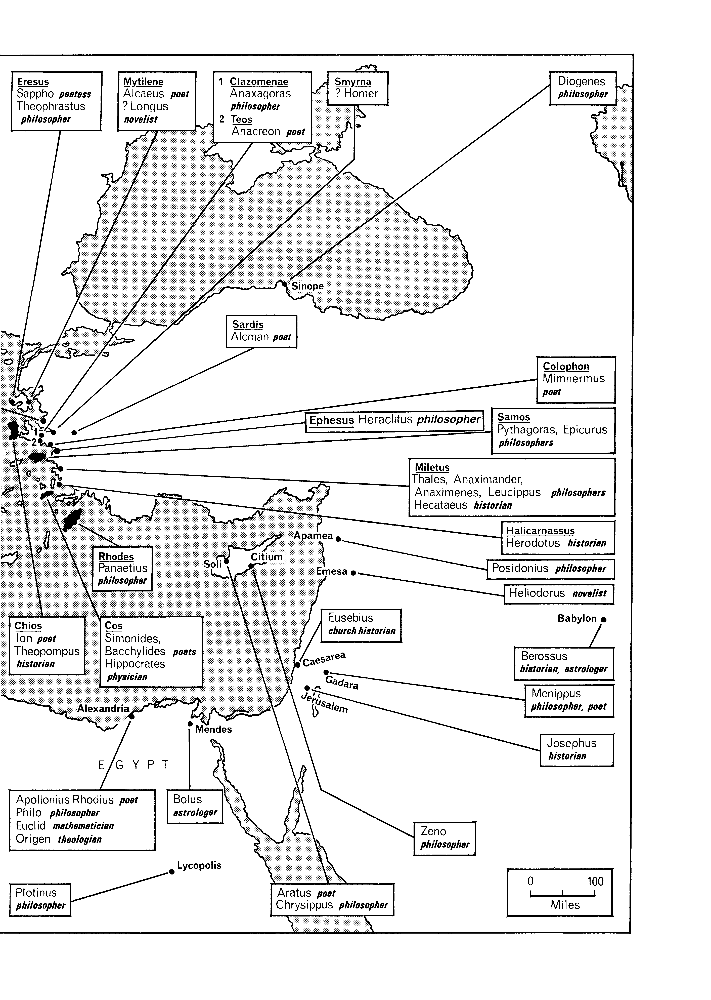
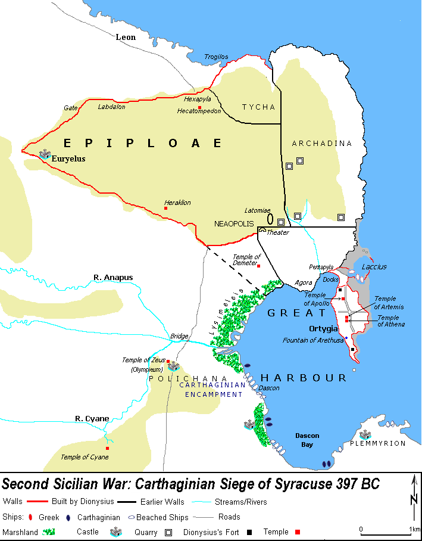

Geografía de Sicilia¶
Timeline¶
---
displayMode:
---
%%{init:
{'theme': 'default'
}
}%%
gantt
title Historia de Sicilia
dateFormat X
axisFormat %s
tickInterval 10second
section Guerras de Sicilia
1ª (480 BC) : -480, 1s
2ª (410–404 BC): -410, 7s
3ª (398–393 BC): -398, 6s
4ª (383–376 BC): -393, 7s
5ª (368-367 BC): -368, 2s
6ª (345–339 BC): -345, 7s
%% 7ª (311–306 BC): -311, 6s
%% Pyrrhic War (278–276 BC): -278, 3s
section Dinoménidas
Muerte de Gelón: -478, -478, 1s
Hierón I tirano de Siracusa: -467, -478, 12s
Trasibulo tirano de Siracusa: -465, -466, 3s
section Democracia
Democracia: -405, -465, 60s
section Dionisio
Dionisio I (430-367 a. C.): -367, -430, 63s
Tiranía de Dionisio I (405-367 a. C.): -367, -405, 38s
Dionisio II (397_343 a.C): -343, -397, 54s
Dión (357–355 a.C): -355, -357, 2s
Calipo (355–353 a.C): -353, -355, 2s
Hiparino (353–350 a.C): -350, -353, 3s
Niseo (350–346 a.C): -346, -350, 4s
Dionisio II (346–344 a.C): -344, -346, 2s
section Timoleón
Timoleón (345–337 a.C.): -337, -345, 8s
%% Tercera Democracia (337-317 a.C.): -317, -337, 20s
%% section Agathocles (317–289)
%% Agathocles (317–289): -289, -317, 28s
section Platón en Sicilia
Primer viaje de Platón a Sicilia (388 a.C.): crit, milestone, -388, -388, 1s
Segundo viaje de Platón a Silicia (367 a.C.): crit, milestone, -367, 1s
Tercer viaje de Platón a Silicia (361 a.C.): crit, milestone, -361, 1s
section Platón (427-347 a. C.)
Vida: -347, -427, 80s
section Grecia
431–404 a.C. Guerra del Peloponeso: a0, -431, 28s
440 a.C. Ruptura de la paz: rebelión de Samos contra Atenas:a1, -440, 1s
435-433 a.C. Guerra entre Corinto y Córcira: a6, -435, 3s
431-421 a.C. La guerra arquidámica :a2, -431, 10s
421 a.C. Paz Nicias :a3, -421, 1s
415-413 a.C. Expedición a Sicilia : crit, -415, 3s
414-404 a.C. Apoyo aqueménida a Esparta: a5, -414, 11s
413-404 La segunda guerra Guerra de Decelia: a5, -413, 10s
411 a.C. Revolución oligárquica, los Cuatrocientos: a7, -411, 1s
404 a.C. El gobierno de los Treinta Tiranos: a7, -404, 1s
404 a.C. Rendición de Atenas: a6, -404, 1s
403 a.C. Trasíbulo restaura la democracia: a7, -403, 1s
Colonias griegas¶

Sicilia bajo el dominio de los Dinoménidas (485-465 a.C.)¶


Dialectos griegos de Sicilia¶

Sitio de Siracusa por los Atenienses (415-413 a.C.)¶

Sicilia y sur de Italia (s. V a.C.)¶

Reino de Dionisio I (406-367 a.C.)¶

Origen de los grandes escritores griegos¶
|  |  |
Asedio cartaginés de Siracusa 397 a.C¶


Sicilia: 2ª batalla de Himera 409 a.C¶

Colonias griegas2¶
 |
|
|  |  |